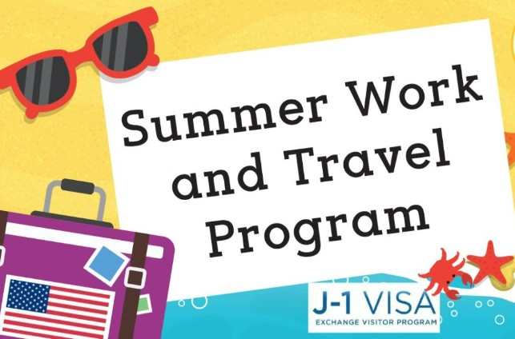

Work and Travel experience
October 2, 2022 by Jahmarley Robinson
In my first year of college i decided to participate on the Work and Travel program. This is a program where students enrolled in college is able to travel to the United States of America and work legally in the country for the summer. It is a great opportunity to earn money as well as experience a new culture.
If i had to describe my experience in one word it would be "ambivalent". There were times where it was absoluetly amazing and times where I just wanted to go back home. I must admit for the most part it was pretty good. If i had to give it a rating on a scale of 10 it would probably be 8 and thats not bad for a first experience. I met some great people who are now some of my closest friends as well as some people who i had to just tolerate during my stay. It was also beneficial in terms of money as you are able to make a good amount of money during the summer as a first year student with not much responsibility. The American culture is also something everyone dreams of experiencing so that is also a bonus. This is a program i would recommend any student to participate in due to numerous benefits and i definitely plan on returning for my 2nd year.
 The transition into face to face learning is where the challenges peak. Waking 6 am to get to campus on time for your lecture and not getting back home until 8pm with a quiz due at 9pm is totally not ideal. This interferes with your focus as you are constantly tired especially in classes and you regularly lose focus. When you get home from a long day you feel as if their is no time to complete any of the 10 assignments you have and to get caught up with your studies as you just want to rest for the next day again. This proves quite challenging managing your time but we are just trying to cope.
The transition into face to face learning is where the challenges peak. Waking 6 am to get to campus on time for your lecture and not getting back home until 8pm with a quiz due at 9pm is totally not ideal. This interferes with your focus as you are constantly tired especially in classes and you regularly lose focus. When you get home from a long day you feel as if their is no time to complete any of the 10 assignments you have and to get caught up with your studies as you just want to rest for the next day again. This proves quite challenging managing your time but we are just trying to cope.